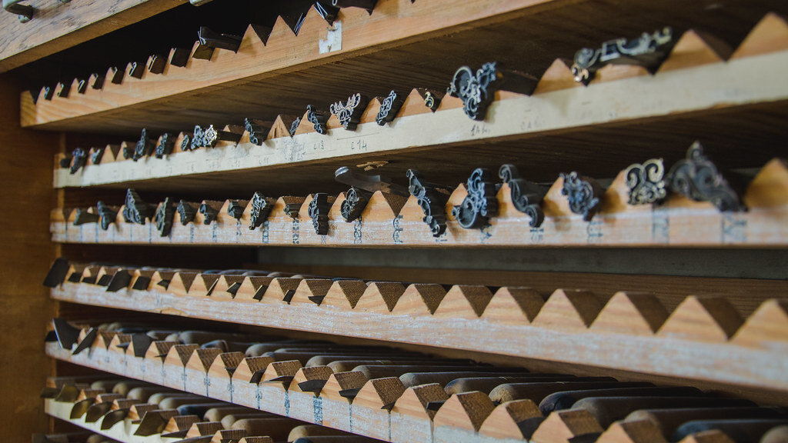
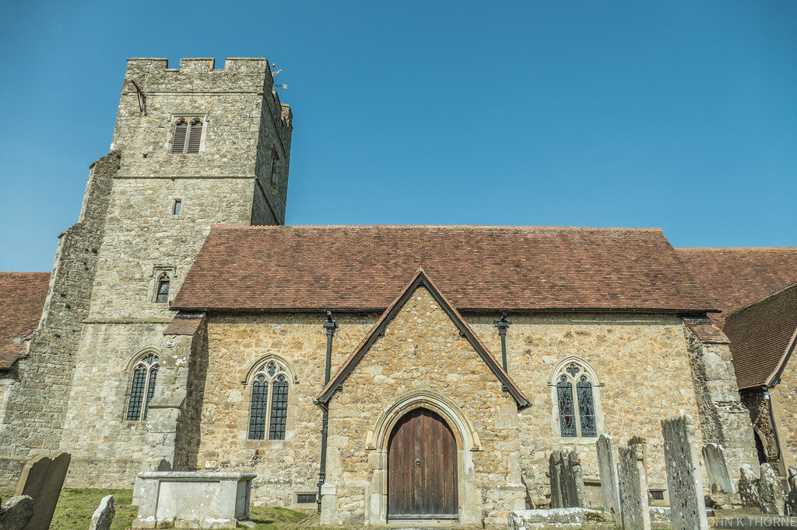
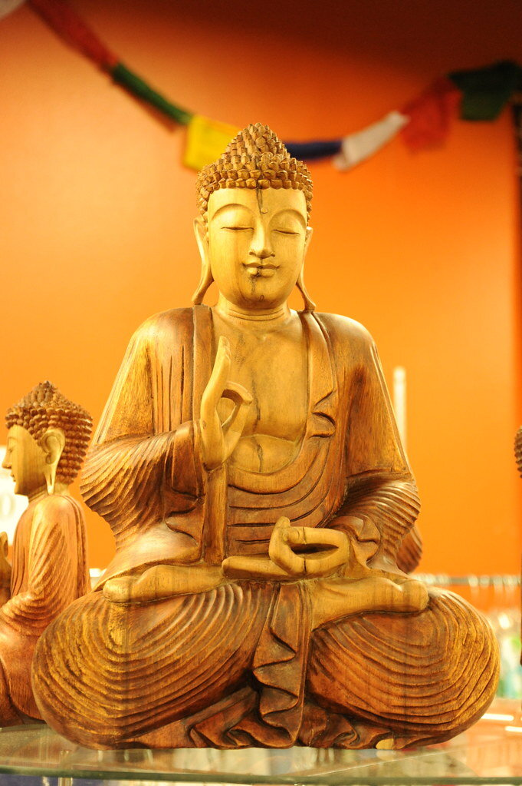
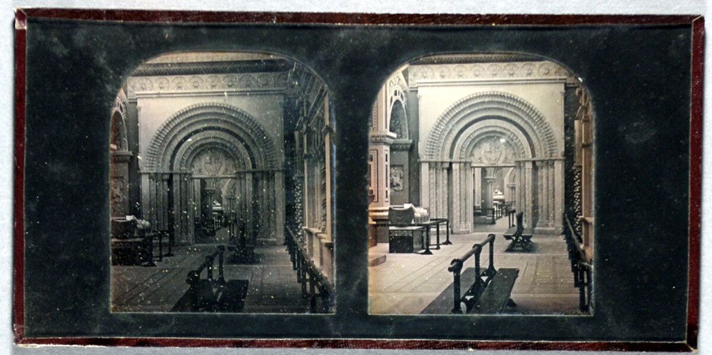
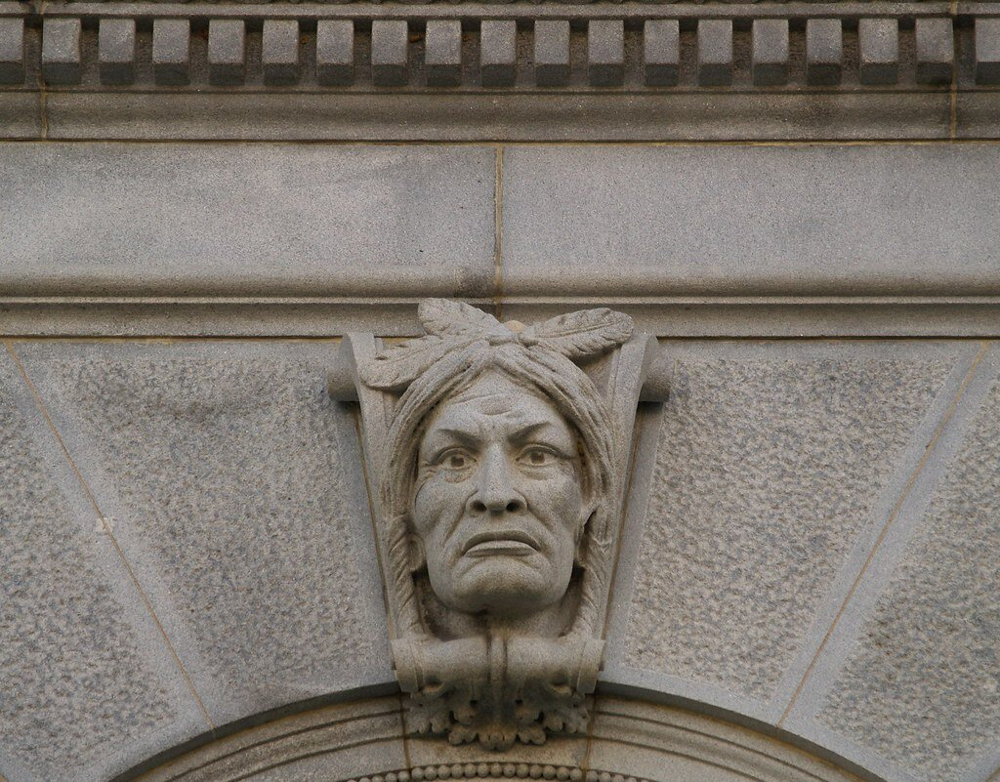
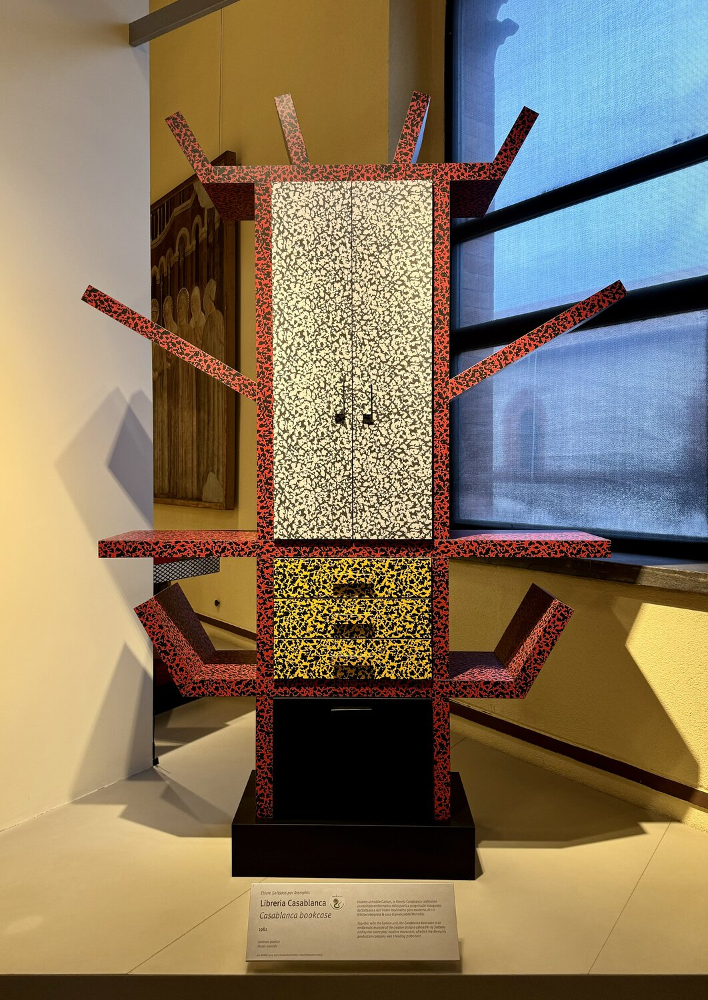
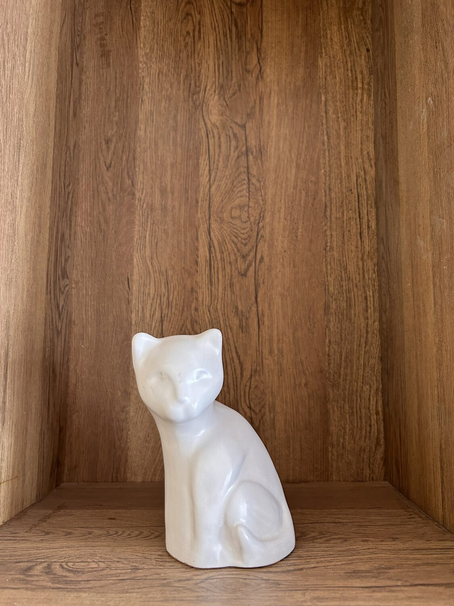
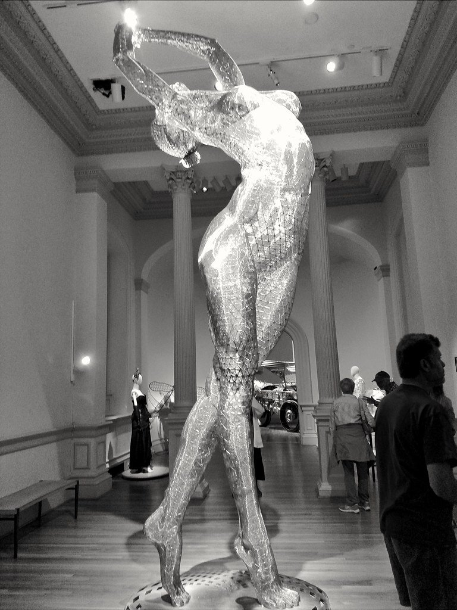

Tallar es la única de las artes donde se crea quitando material, no añadiéndolo.
Un estudio de José Alejandro Reyes Zeind · escultor
En la talla, la forma no se construye: se libera. El escultor retira madera o piedra hasta dejar el volumen que el bloque ya contenía. La pieza no se añade al mundo; se descubre dentro de la materia.



Según cuánto se retire del bloque, el volumen se asoma de maneras distintas: apenas insinuado en la superficie, o liberado por completo del fondo.

La forma se eleva poco sobre el plano; vive de la luz rasante y de la sombra mínima.

El volumen sobresale tanto que casi se separa del fondo, sin abandonarlo del todo.

La pieza exenta, liberada del bloque por completo: se rodea, se mira desde todos los lados.
La materia no es neutra: tiene dirección. La veta de la madera y el grano de la piedra marcan por dónde la herramienta avanza limpio y dónde se rebela. Tallar a favor de la fibra desprende viruta dócil; ir en contra arranca y desgarra. El escultor lee esa orientación antes del primer golpe, porque el bloque ya impone su gramática.

Cada filo deja una marca propia. La gubia ahueca, el formón aplana, la escofina ordena la superficie antes del pulido. El mazo entrega la fuerza; la mano, la medida.
Cuando el volumen ya está, queda la piel. El acabado decide si la pieza retiene la huella de la herramienta o la borra hasta el pulido espejo. En la madera, la cera y el aceite avivan la veta; en la piedra, el abujardado deja un grano áspero o un satinado que atrapa la luz. La última capa no añade forma: revela la que ya existía.

El volumen solo se vuelve visible cuando la luz lo cruza. Una talla cambia con la hora del día: lo que de frente parece plano, de costado se hunde en pliegues. Por eso el escultor trabaja girando la pieza contra la luz, buscando la sombra que confirma la forma. Tallar es también esculpir la oscuridad que cada hueco proyecta.
Cada golpe es definitivo: lo que se quita no vuelve. Por eso la talla es un arte de la decisión —y de la calma—. La tradición guatemalteca de talla en madera llevó esta lógica al detalle minucioso: pliegues, rostros y texturas surgidos de la sustracción paciente.
No hay deshacer ni capa que cubra el error; solo la posibilidad de seguir quitando hasta que la falla se integre o la pieza se reduzca. El bloque administra su propio tiempo: marca el límite de lo que aún puede perderse sin perderlo todo.
El volumen conserva la memoria de todo lo que dejó de ser.